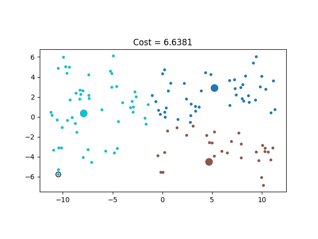

Solving k-Center
In Section 1.3, we used the following commands to visualize a solution to the \(3\)-center problem for the cities dataset.
echo 5 44 110 > centers.txt
python3 kcenter_v3.py cities128.txt centers.txt cities128_v3.pngThe output image cities128_v3.png is shown below.

The three centers with indices 5, 44, and 110 provide an optimal solution to the \(3\)-center problem for this dataset.
But where did these three centers come from?
In this section, we will implement a brute force algorithm for solving the \(3\)-center problem and evaluate the performance of two key algorithmic ideas that result in significant speedups. Although we focus on \(k=3\), these algorithmic ideas apply to any value of \(k\).
A Brute Force Implementation
Here is our first attempt at solving the \(3\)-center problem in Python.
import sys
import math
import time
# calculate the cost squared for the centers with indices c1, c2, c3
def calc_cost_sq(x,y,c1,c2,c3):
cost_sq = 0
n = len(x)
for k in range(n):
# since only 3 centers, faster to avoid inner loop
dx = x[k] - x[c1]
dy = y[k] - y[c1]
dist_sq1 = dx*dx + dy*dy
dx = x[k] - x[c2]
dy = y[k] - y[c2]
dist_sq2 = dx*dx + dy*dy
dx = x[k] - x[c3]
dy = y[k] - y[c3]
dist_sq3 = dx*dx + dy*dy
min_dist_sq = dist_sq1
if (dist_sq2 < min_dist_sq):
min_dist_sq = dist_sq2
if (dist_sq3 < min_dist_sq):
min_dist_sq = dist_sq3
if min_dist_sq > cost_sq:
cost_sq = min_dist_sq
return cost_sq
def solve_3center(x,y):
n = len(x)
min_cost_sq = float("inf")
optimal_centers = (-1,-1,-1)
for i in range(n-2):
for j in range(i+1,n-1):
for k in range(j+1,n):
cost_sq = calc_cost_sq(x,y,i,j,k)
if (cost_sq < min_cost_sq):
min_cost_sq = cost_sq
optimal_centers = (i,j,k)
return min_cost_sq, optimal_centers
if len(sys.argv) < 3:
print ("usage : python3",sys.argv[0],"data_file centers_file")
sys.exit(1)
# read 2d points into x and y
x = []
y = []
f = open(sys.argv[1],"r")
for line in f:
x_next, y_next = line.split()
x.append(float(x_next))
y.append(float(y_next))
f.close()
n = len(x)
start = time.perf_counter()
min_cost_sq, optimal_centers = solve_3center(x,y)
elapsed = time.perf_counter() - start
f = open(sys.argv[2], "w")
print(*optimal_centers, file=f)
f.close()
print (f"kcenter3 runtime: {elapsed:.3f} seconds")
print (f"optimal cost = {math.sqrt(min_cost_sq):.3f}")The program contains two functions for solving the \(3\)-center problem. The function calc_cost_sq calculates the squared cost for one particular choice of three centers, while solve_3center searches through all possible choices of three centers to find an optimal solution.
Calculating the Cost
Recall that the quality of a set of centers is measured using the cost function
\[ \operatorname{cost}(\mathbf{c}_1,\mathbf{c}_2,\ldots,\mathbf{c}_k) = \max_{1\leq i\leq n} \min\left( \|\mathbf{p}_i-\mathbf{c}_1\|, \|\mathbf{p}_i-\mathbf{c}_2\|, \ldots, \|\mathbf{p}_i-\mathbf{c}_k\| \right). \]
For each point \(\mathbf{p}_i\), we first find the distance to its closest center. The cost is the largest of these minimum distances.
Since we only need to compare distances while searching for the optimal centers, we can avoid calculating square roots and work with squared distances instead. Squaring preserves the ordering of nonnegative distances, so the set of centers that minimizes the squared cost also minimizes the cost.
The function calc_cost_sq therefore calculates the squared cost for one particular choice of three centers. For each point in the dataset, we calculate the squared distance to each of the three centers.
dx = x[k] - x[c1]
dy = y[k] - y[c1]
dist_sq1 = dx*dx + dy*dy
dx = x[k] - x[c2]
dy = y[k] - y[c2]
dist_sq2 = dx*dx + dy*dy
dx = x[k] - x[c3]
dy = y[k] - y[c3]
dist_sq3 = dx*dx + dy*dyWe next find the smallest of these three squared distances.
min_dist_sq = dist_sq1
if dist_sq2 < min_dist_sq:
min_dist_sq = dist_sq2
if dist_sq3 < min_dist_sq:
min_dist_sq = dist_sq3This is the squared distance from the current point to its closest center. To calculate the squared cost, we keep the largest value of min_dist_sq encountered over all of the points.
if min_dist_sq > cost_sq:
cost_sq = min_dist_sqWhen the loop finishes, cost_sq contains the squared cost for the three selected centers.
Searching for the Optimal Centers
The function solve_3center considers every possible set of three centers. As we saw in Section 1.4, the following nested loops generate each unique triple of indices exactly once.
for i in range(n-2):
for j in range(i+1,n-1):
for k in range(j+1,n):For each triple, we calculate its squared cost.
cost_sq = calc_cost_sq(x,y,i,j,k)We keep track of the smallest cost found so far and the corresponding center indices.
if cost_sq < min_cost_sq:
min_cost_sq = cost_sq
optimal_centers = (i,j,k)After every possible set of three centers has been tested, optimal_centers contains an optimal solution to the \(3\)-center problem.
Running the Brute Force Implementation
Let’s use kcenter3_v1.py to solve the \(3\)-center problem for the 128 city dataset.
$ python3 kcenter3_v1.py cities128.txt centers.txt
kcenter3 runtime: 16.839 seconds
optimal cost = 6.638
$ cat centers.txt
5 44 110The program finds the optimal centers with indices 5, 44, and 110, which are exactly the centers used to create the visualization at the beginning of this section.
There are
\[ \binom{128}{3} = 341,376 \]
unique choices of three centers for the cities dataset. Our brute force algorithm checks every one of these possibilities exactly once. Since kcenter3_v1.py takes 16.839 seconds, it checks approximately
\[ \frac{341,376}{16.839} \approx 20,273 \]
candidate sets of centers per second.
Can we check each of these candidate sets faster?